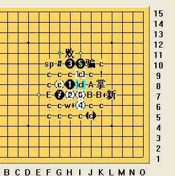
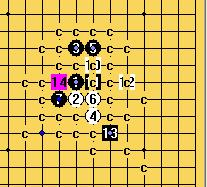
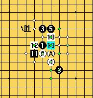

严重的问题
首页
连珠终结者
#1 严重的问题 作者：没事摆石子玩 发表时间：2009-6-17 11:45:43

终结者突然出现这样的问题，请问怎么回事？如何解决?请小四回答。

#2 Re:严重的问题 作者：没事摆石子玩 发表时间：2009-6-17 11:49:37

#3 Re:严重的问题 作者：极地剑客 发表时间：2009-6-17 21:06:48
没碰到过~等小四来解答吧~不过看你的谱很好很强大噢~
#4 Re:严重的问题 作者：4 发表时间：2009-6-18 5:30:24
是棋谱有问题了.建议回退到第一手,然后工具->删除->全部非法着法,清理谱一下.
#5 Re:严重的问题 作者：omnne 发表时间：2009-8-14 12:22:33
是因为做谱到43，然后退回去就出现的问题
#6 Re:严重的问题 作者：4 发表时间：2009-8-15 3:42:12
若是使用近期09版本的,建议设置->VCT设置
添加胜的分枝,
生成LIB文件
两项去钩.
#7 Re:严重的问题 作者：极地剑客 发表时间：2009-12-13 5:45:55
看楼上贴又学到一点~08也有重合的时候~不知道这么设置有用吗~试试去~